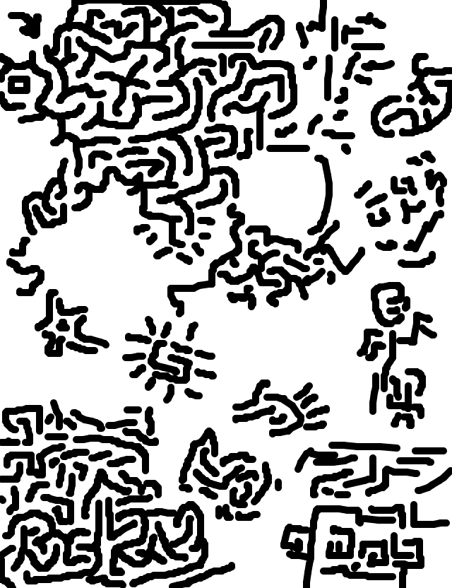
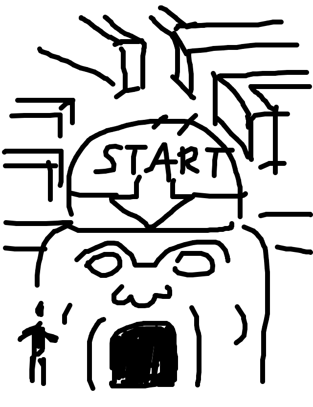
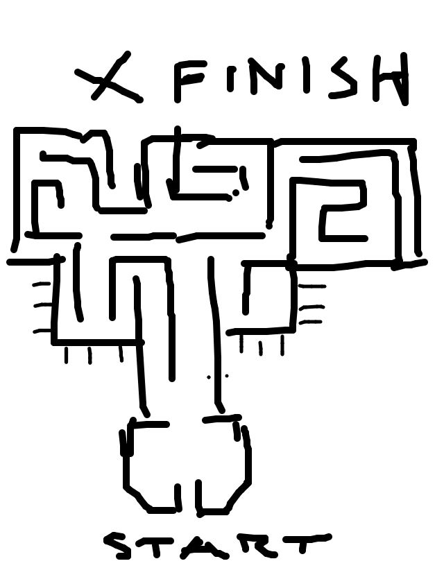
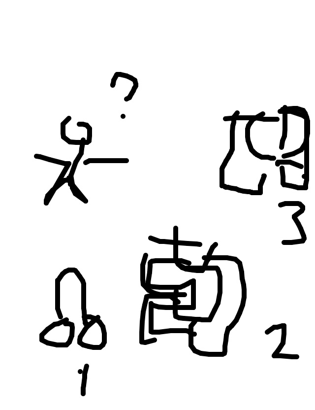

so rickyc drew...
so mike wrote...
The ancient Mayan maze proved difficult for Charlie but at least he knew where to start.
so irondavy drew...
so matt wrote...
The start of this labyrinth is a little too... suggestive.
so tag drew...
so jackcheng wrote...
Whoever designed this phallic maze got it all backwards. You're supposed to come out the *other* end!
so jason drew...
so tasia wrote...
3... 2... 1... Blast off?